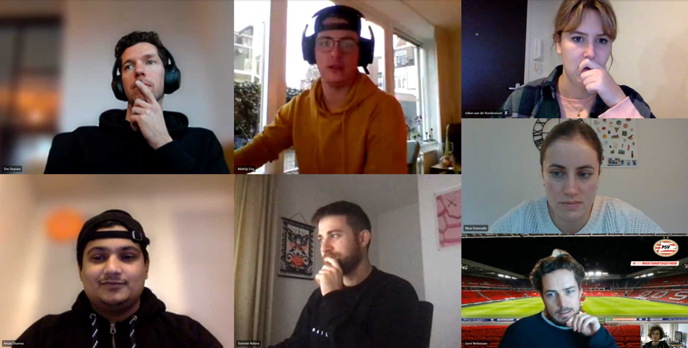
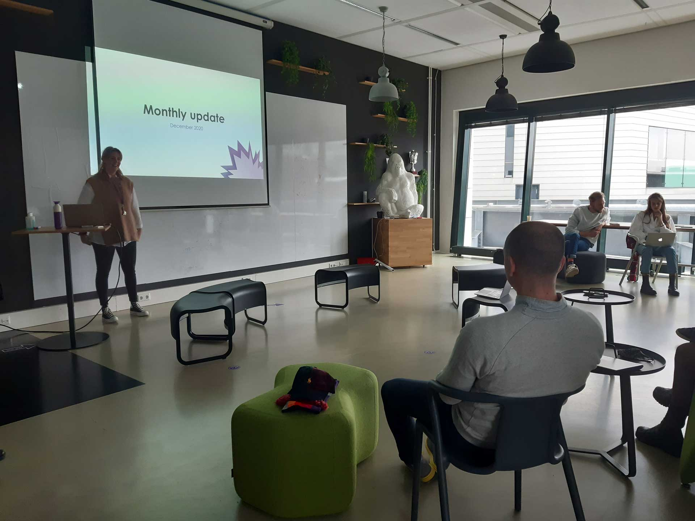

Way of working
SCRUM
Way of working thorugout Greenhouse is SCRUM, So we followed the same approach in our project for better adaptation.

Daily Standup
We start with the main team i.e. I, Mathijs and Niek daily at 9 AM with the daily stand up, where we discuss what task everyone will be working on that particular day, what we did the day before and if we are facing any difficulties in the assigned tasks. This allows us to keep a good progress record of the project and makes it easier for everyone to communicate there problem if there are any. First few week we meet everyday at office but after lock down the daily stand ups happened on MS Teams at same time and with same strategy.
Week Starts
Again one of the advantages of SCRUM is that it is easy to update everyone involved in the project. My Team Leader was, always available when I needed help. In fact we had a proper communication plan, to keep him poted on the progress of the project. We meet Every week on Monday with our Team leader, present our progress with the project and ask for feedback. It was nice to get feedback every week, we always knew where we stand and there was no grey areas everything was either white or black. Also, It helped me improve my presentation skills as every week we made a proper presentation and presented professionally with proper set up.


Client Meetings
As we were working with a real client, PSV, We had meetings with them every three weeks to present the concepts we want to work on, get feedback and finally get an approval. PSV plays an important role as it is one of the major stake holders of the project. They have to approve the final concept, SO we took full advantage of these meetings to present our progress as best as we can and make sure we are on the same page with our client.
we scheduled the meeting every 3 weeks in the start of project, which was a good decision as everyone related to the project had these in their calendar and we did not have to ask them everytime whether they are available or not.
Monthly Innovation Update
This semester there were 24 Interns at Greenhouse, out of those 11 were in same department as of mine i.e. LABS. Our team leader organized this extra meeting where we update our fellow students on the progress of the project. Everyone was working on their own project which are very interesting but it was good to see what other people are up to. Also that way we got to know about all the new technologies that are in fashion at the current time. For me it was a great opportunity to improve my professional front, I improved my presentation skill a lot during this internship.
As these meetings were planned on Thursdays, After all the presentations are done we all join together for drink and make it a fun evening.


Scrum Board
To keep our progress and activities transparent, we use a SCRUM board which lists all activities that need to be done, categorized by:
- To Do
- Busy
- To test
- Rounded
As a team we all were familiar with trello as we have used it all the time in school project, so we opted for it. Trello is very convenient, while working from home we made good use of it and ensured that we do not forget our tasks. I liked this way of working as it was very transparent.